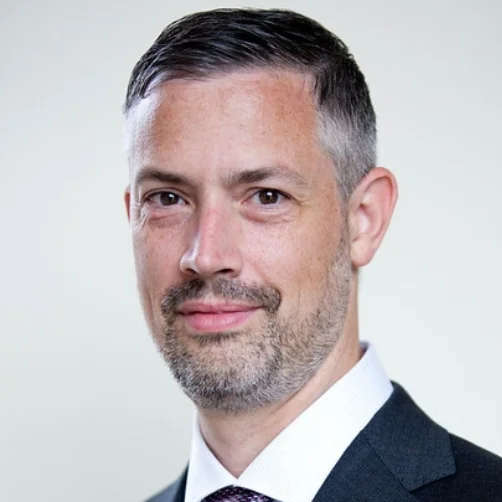

We're living through a revolution with AI and Engineering Biology colliding to unlock capabilities that seemed impossible just years ago. From designing new to nature proteins with AI, to reprogramming living cells and accelerating scientific discovery at breathtaking speed. This isn't incremental progress. This is a transformation.
Join us in Bristol for two days where pioneers, researchers, and innovators at the intersection of these fields will share their latest breakthroughs, challenge boundaries, and discuss what comes next. The future is being built now --- become part of it!
In addition to keynote and highlighted talks, we welcome submission of abstracts for consideration as short oral and poster presentations. We are particuarily interested in submissions from early career researchers (PhDs and postdocs) and will have number of travel awards to support their attendance. Further information is available during registration.
Places are limited, so be sure to register early (deadline 19th December 2025). Registration will open soon!
(£30 early career researchers, £70 established academics and industry)
AIEBaB Hack-a-thon
We will be running an hack-a-thon that is open to any attendees on the 14th January 2025. If you are interested in taking part, ensure that you select the option when registering or email the organising team.
Speakers
We are in the process of finalising our lineup. Check back soon to see the full list!

Caleb Bashor
Caleb is an Assistant Professor of Bioengineering & BioSciences at Rice University, USA. His research focuses on engineering synthetic circuitry to reshape cellular phenotypes, with an eye on developing transformational cell-based therapeutics from engineered human cells.
Jana Weber
Jana is an Assistant Professor for Artificial Intelligence in Bioscience at the Department of Intelligent Systems at the TU Delft, Netherlands. Jana studies how network science and machine learning can push forward the development of sustainable bioprocesses, bridging theoretical and experimental fields.
Jean-Baptiste Lugagne
Jean-Baptiste is an Associate Professor at the University of Oxford, UK. His research is at the intersection of synthetic biology, control theory, and machine learning and aims to transfer data-driven approaches to biological research and engineering.
Jeff Clune
Jeff is a Professor of Computer Science at the University of British Columbia, Canada, CIFAR AI Chair and Faculty Member of the Vector Institute, and Senior Research Advisor to DeepMind. He is interested in creating open-ended algorithms where AI systems can learn and truly innovate without end (as natural evolution and human culture do).
Michiel Stock
Michiel is an Assistant Professor in the Faculty of Bioscience Engineering at Ghent University, Belgium. He is interested in applying computational intelligence to modelling and engineering in the life sciences and has pioneered novel approaches to biological design through hyperdimensional computing.
Niko McCarty
Niko is the Founding Editor of Asimov Press and has a long background in biology and science journalism. He currently publishes deep and thoughtful articles at the frontiers of biology, as well as about its history.
Venue
The conference will take place at the main campus of the University of Bristol, a short (but hilly!) walk from Bristol Temple Meads train station and approximately a 30 min taxi ride from Bristol International Airport (BRS).
Address:
University of Bristol,
7 Woodland Road,
Bristol BS8 1TB, UK
Travel & Accommodation
More information to follow...
Sponsorship
This event was made possible by generous support from:
CYBER, UKRI Engineering Biology Mission Award (BB/Y007638/1)
A huge thanks goes out to Oskar Wickström for developing this monospace asthetic for the web --– constraints truely are the fuel of creativity: github.com/owickstrom/the-monospace-web